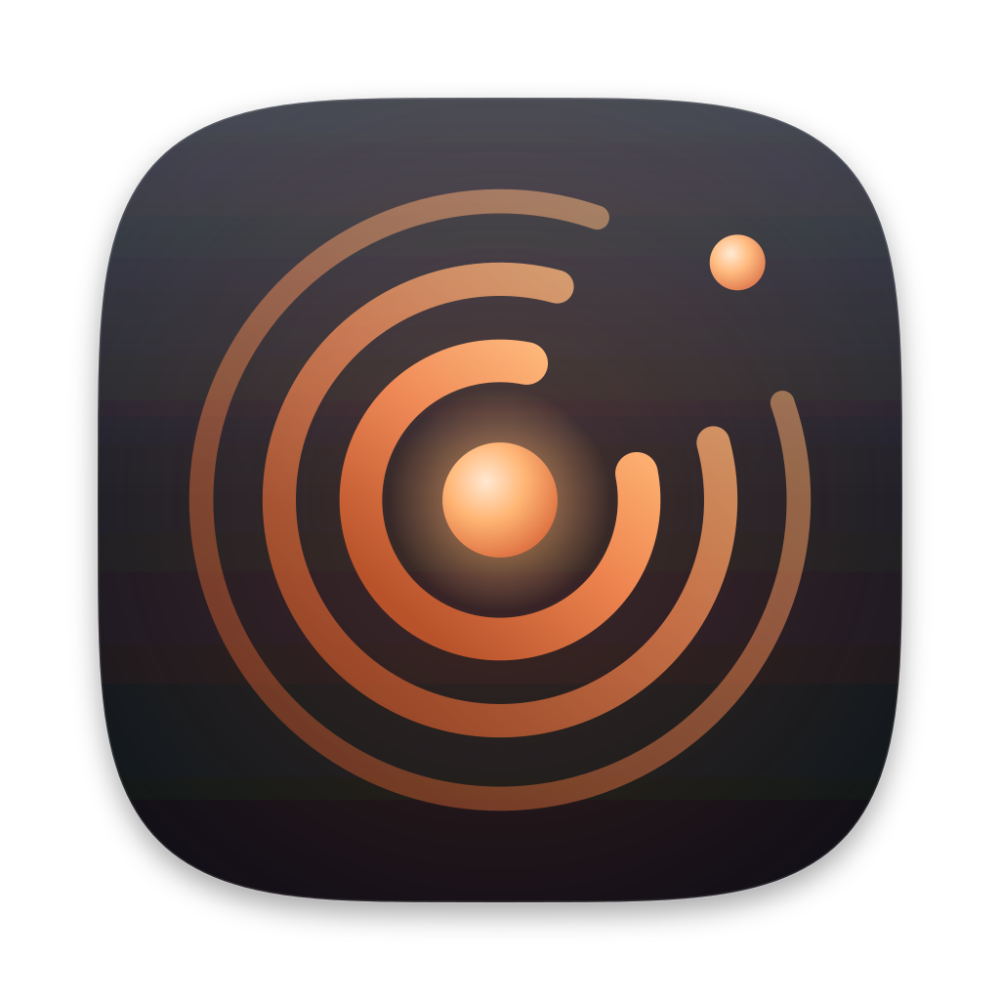

Calcul partagé, réseau local
Tes ordinateurs s'entraident.
Lance une tâche lourde sur l'un, elle tourne sur le plus disponible du réseau, et le résultat revient comme si de rien n'était.
Télécharger Echoes
Installation
Trois étapes, une seule fois.
- Ouvre le fichier téléchargéSur Mac, glisse Echoes dans le dossier Applications, puis lance-le.
- Le tableau de bord s'ouvre une première foisEchoes s'installe en arrière-plan et démarre avec ta session. Sur ta première machine, tu trouves ton code d'appairage dans la rubrique « Appairage ».
- Sur tes autres machines, colle ce codeDans la rubrique « Appairage » du tableau de bord. Elles se trouvent ensuite toutes seules sur le même réseau local ; si le système demande d'autoriser Echoes sur le réseau, accepte. Garde ce code secret : il permet de lancer des commandes sur toutes tes machines.
Dans un terminal
$ echoes run -- cargo build --release → envoyé à mac-mini (8 cœurs libres) Compiling echoes Finished release in 41 s ✓ résultat rapatrié sur imac
Ce qu'il fait, et ce qu'il ne fait pas
Discret, attentif, et chez toi seulement.
InvisiblePas d'icône dans le Dock ni de fenêtre. Après l'installation, le tableau de bord ne s'ouvre que si tu le demandes.
AttentifUne machine prise par un montage ou un rendu 3D est ménagée : les tâches vont ailleurs, ou y tournent bridées.
Chez toi seulementTes machines se parlent en direct sur ton réseau, chiffré. Aucun serveur entre elles ; seules les mises à jour viennent de GitHub.
Toujours à jourLes nouvelles versions s'installent seules, quand aucune tâche ne tourne.
Premier lancement : macOS ou Windows demande une confirmation
Echoes n'est pas encore signé par Apple ni par Microsoft, alors le système demande une confirmation la première fois :
- macOS : si Echoes refuse de s'ouvrir, va dans Réglages Système > Confidentialité et sécurité, puis « Ouvrir quand même ». Si macOS le dit « endommagé », ouvre le Terminal et lance
xattr -dr com.apple.quarantine /Applications/Echoes.app. - Windows : sur « Windows a protégé votre ordinateur », clique « Informations complémentaires », puis « Exécuter quand même ».
Linux et ligne de commande
Dans un terminal :
curl -fsSL https://raw.githubusercontent.com/arthurreeb2-tech/Echoes/main/install.sh | sh
Sur les machines suivantes, ajoute le code : … | sh -s -- <code>